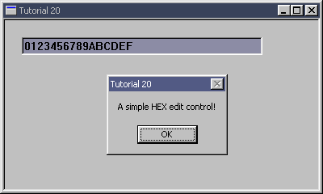

|
Tutorial 20 : Window Subclassing
format PE GUI 4.0
entry start
include '%fasminc%\win32a.inc'
section '.data' data readable writeable
wndH dd ?
insH dd ?
wndClsName db 'TUT_20',0
wndTitle db 'Tutorial 20',0
wndProcAddr dd ?
wndCls WNDCLASS
wndMsg MSG
ctlClsNameEdit db 'EDIT',0
edit1H dd ?
edit1Txt1 db 'A simple HEX edit control!',0
section '.code' code readable executable
start:
invoke GetModuleHandle,0
mov [insH],eax
mov [wndCls.hInstance],eax
mov [wndCls.style],CS_HREDRAW or CS_VREDRAW
mov [wndCls.lpfnWndProc],window_procedure
mov [wndCls.lpszClassName],wndClsName
mov [wndCls.hbrBackground],COLOR_BTNFACE+1
invoke LoadIcon,NULL,IDI_APPLICATION
mov [wndCls.hIcon],eax
invoke LoadCursor,NULL,IDC_ARROW
mov [wndCls.hCursor],eax
invoke RegisterClass,wndCls
invoke CreateWindowEx,WS_EX_CLIENTEDGE,\
wndClsName,wndTitle,\
WS_OVERLAPPEDWINDOW + WS_VISIBLE,\
CW_USEDEFAULT,CW_USEDEFAULT,\
400,240,\
NULL,NULL,[insH],NULL
mov [wndH],eax
;+---------------------------+
;| entering the message loop |
;+---------------------------+
window_message_loop_start:
invoke GetMessage,wndMsg,NULL,0,0
or eax,eax
je window_message_loop_end
invoke TranslateMessage,wndMsg
invoke DispatchMessage,wndMsg
jmp window_message_loop_start
window_message_loop_end:
invoke ExitProcess,0
;+----------------------+
;| the window procedure |
;+----------------------+
proc window_procedure,hWnd,uMsg,wParam,lParam
push ebx esi edi
cmp [uMsg],WM_CREATE
je wmCREATE
cmp [uMsg],WM_DESTROY
je wmDESTROY
wmDEFAULT:
invoke DefWindowProc,[hWnd],[uMsg],[wParam],[lParam]
jmp wmBYE
wmCREATE:
invoke CreateWindowEx,WS_EX_CLIENTEDGE,ctlClsNameEdit,NULL,\
WS_CHILD + WS_VISIBLE + WS_BORDER,\
20,20,300,24,\
[hWnd],NULL,[insH],NULL
mov [edit1H],eax
invoke SetFocus,eax
invoke SetWindowLong,[edit1H],GWL_WNDPROC,edit1_procedure
mov [wndProcAddr],eax
jmp wmBYE
wmDESTROY:
invoke PostQuitMessage,0
wmBYE:
pop edi esi ebx
return
endp
proc edit1_procedure,hWnd,uMsg,wParam,lParam
push ebx esi edi
cmp [uMsg],WM_CHAR
je edit1_wmCHAR
cmp [uMsg],WM_KEYDOWN
je edit1_wmKEYDOWN
jmp @f
edit1_wmCHAR:
mov eax,[wParam]
cmp al,VK_BACK ;compare with virtual key BACKSPACE
je @f
cmp al,0x30 ;compare with ascii 0
jb edit1_wmBYE
cmp al,0x39 ;compare with ascii 9
jbe @f
cmp al,0x41 ;compare with ascii A
jb edit1_wmBYE
cmp al,0x46 ;compare with ascii F
jbe @f
cmp al,0x61 ;compare with ascii a
jb edit1_wmBYE
cmp al,0x66 ;compare with ascii f
jbe wmCHAR_add
jmp edit1_wmBYE ;something else
wmCHAR_add:
sub [wParam],0x20 ;so our AL become big letter
jmp @f
@@:
invoke CallWindowProc,[wndProcAddr],[hWnd],[uMsg],[wParam],[lParam]
jmp edit1_wmBYE
edit1_wmKEYDOWN:
mov eax,[wParam]
cmp al,VK_RETURN ;compare with virtual key RETURN
jne @b
invoke MessageBox,[hWnd],edit1Txt1,wndTitle,MB_OK
invoke SetFocus,[hWnd]
edit1_wmBYE:
pop edi esi ebx
return
endp
section '.idata' import data readable
library KERNEL32, 'KERNEL32.DLL',\
USER32, 'USER32.DLL'
import KERNEL32,\
GetModuleHandle, 'GetModuleHandleA',\
ExitProcess, 'ExitProcess'
import USER32,\
RegisterClass, 'RegisterClassA',\
CreateWindowEx, 'CreateWindowExA',\
DefWindowProc, 'DefWindowProcA',\
LoadCursor, 'LoadCursorA',\
LoadIcon, 'LoadIconA',\
SendMessage, 'SendMessageA',\
GetMessage, 'GetMessageA',\
MessageBox, 'MessageBoxA',\
SetFocus, 'SetFocus',\
SetWindowLong, 'SetWindowLongA',\
CallWindowProc, 'CallWindowProcA',\
DestroyWindow, 'DestroyWindow',\
TranslateMessage, 'TranslateMessage',\
DispatchMessage, 'DispatchMessageA',\
PostQuitMessage, 'PostQuitMessage'
Result :

|